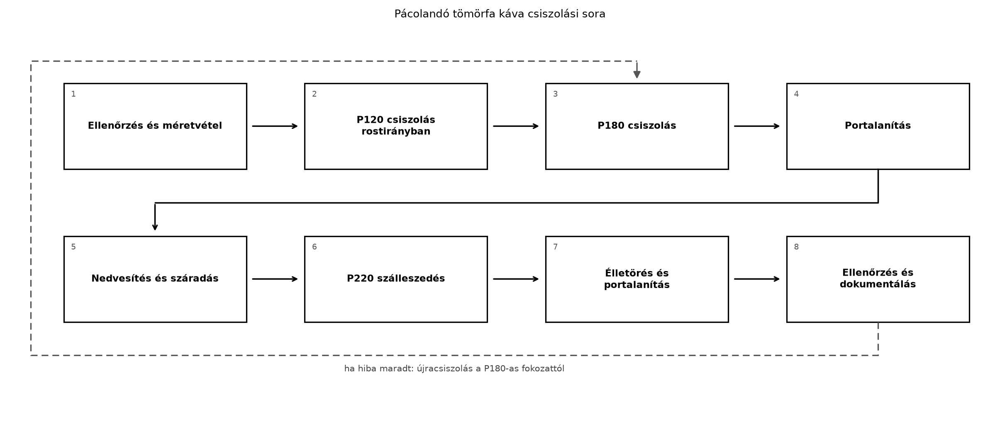

A pácolt tömörfa káva akkor lesz egyenletes, selymes felületű, ha a csiszolási sor minden fokozata a helyén van. Ha kihagysz egy lépést, a pác kihozza a karcolást, a lakk felnagyítja a hullámot. Ebben az alfejezetben azt tanulod meg, hogyan kell csiszolni úgy, hogy a felületkezelő anyag a legjobb oldalát mutassa.
Képzelj el egy 30 mm vastag, 80 mm széles, 600 mm hosszú tölgyfa kávát. Gépi gyalulás után a felülete sima, de apró késhullámok és vágásnyomok vannak rajta. Ha ezt rögtön pácolod, a pác beszívódik a rostokba, a vágásnyomok pedig sötét csíkokként látszanak. A csiszolás nem „ledörzsöli” a fát, hanem egyre finomabb karcolási képet épít fel, amíg a felület már nem mutat irányított karcolást, csak egyenletesen bársonyos.
Definíció. A csiszolási sor a csiszolóanyag-finomság egymásra épülő lépcsője. Tömörfa felületkezelés alá jellemzően 80 → 120 → 180 P-grádust használunk; pácolandó felületnél 120 → 180 → nedvesítés → 220, lakkozás közbenső csiszolásánál 240–320 (egy fokozat) (ellenőrizendő: gyártói ajánlás).
Szabály. A csiszolási fokozatot legfeljebb 50–100 %-kal ugorjuk egyszerre. Például 80-ról ne ugorj 180-ra, mert a 80-as karcolás mélységét a 180-as szemcse nem távolítja el teljesen.
Definíció. A szálfelállítás az a művelet, amikor a fa felületét tiszta vízzel enyhén megnedvesítjük, megszárítjuk, majd finom csiszolóanyaggal levesszük a felállt rostszálakat. Ezzel elérjük, hogy a pác vagy lakk felhordásakor már ne álljanak fel a rostok, ne érdesedjen a felület.
Definíció. A gyártásközi ellenőrzés a gyártás egyes műveletei után végzett mérés, szemrevételezés és dokumentálás annak eldöntésére, hogy az alkatrész továbbengedhető-e a következő műveletre.
Szabály. A csiszolás mindig a rajz és a technológiai előírás szerint meghatározott felületkezeléshez igazodik. Más a natúr olajozott, a pácolt, a mázolt, a lazúros és a lakkozott felület igénye.
Továbbvitt eredmény. A csiszolt felület minősége meghatározza a Pácolás: pácok fajtái, előkészítés, felhordás, hibák, a A lakkok csoportosítása: NC, PE, PU, SK, diszperziós és UV-lakkok és a Faipari csiszológépek: szalag-, henger-, kontakt-, széles szalagú, tárcsás és élcsiszolók eredményét. A tömörfa alkatrészek csiszolásakor szerzett gyakorlatot az Egyszerű munkadarabok: tervezés, kivitelezés, önértékelés készítésénél használjuk fel újra.
A csiszolás iránya mindig a rosttal párhuzamos, vagy mozgó szerszámnál a rosttal közel párhuzamos. A rosttal ellentétes, harántolt mozgás mély karcolásokat hagy, amelyeket a következő fokozat kevésbé tud eltüntetni.
Kézi csiszolás. A csiszolólapot parafa- vagy keménygumi csiszolófára feszíted. Sík felületen a csiszolófa biztosítja a nyomáseloszlást. Egyenletes, hosszú húzásokkal dolgozz, ne körözz. A munkadarab szélén ne billenj le, mert az él lekerekedik.
Kisgépes csiszolás. Az excenter csiszoló sík és enyhén ívelt felületekre alkalmas, a szalagcsiszoló nagyobb sík felületekre és előcsiszolásra, a rezgőcsiszoló pedig finom, lapszerű felületekre, sarkok előkészítésére. A gépet folyamatosan mozgatni kell; egy helyben tartva a gép átcsiszolja a felületet, égésnyomot hagyhat.
Sík felület. Először géppel, a rosttal párhuzamosan csiszolunk, a gép talpát síkban tartva. A gépi csiszolás után kézzel, csiszolófával ellenőrizzük a felületet, mert a gép lengése hullámosságot okozhat.
Mart, profilozott felület. A marás kör alakú vágásnyomokat hagy. A profilt először a profilhoz illeszkedő profilcsiszoló szivaccsal vagy csiszolófilccel dolgozzuk el, majd a sík felületeket külön csiszoljuk. A profil mélyedéséből a port kefével vagy sűrített levegővel el kell távolítani (porvédelem mellett), mert a pác alatt porszemcse marad.
Sarkok, élek letörése. A csiszolás végén minden éles élt enyhén, jellemzően 0,2–0,5 mm szélességben letörünk 45°-ban csiszolószivaccsal vagy finom csiszolólappal. Ez megakadályozza, hogy az él elvágja a kezet, és hogy a lakkbevonat az élen vékonyan megtörjön.
Nedvesítés és szálfelállítás. Pácolandó vagy vizes bázisú lazúrozandó felületnél a 180 P-grádusú csiszolás és a portalanítás után a felületet tiszta, nedves szivaccsal vagy vízpermetezővel egyenletesen benedvesítjük. Száradás után 220 P-grádussal (vagy 180-nal, ha a pác gyártója durvább felületet kér) könnyedén, a felállt szálakat levesszük. Vizes bázisú pácnál/lazúrnál a szálfelállítás kötelező, oldószeres pácnál ajánlott. A műveletet csak tömörfa felületen végezzük; furnérozott lapon a víz felválthatja a furnért.
Egy 30 × 80 × 600 mm-es tölgyfa kávát natúr színű, oldószeralapú páccal kezelünk, majd lakkozunk. A csiszolási sor:
Natúr felület (olaj, viasz). Az olajozott felület megőrzi a fa tapintását. Tömörfán 120 → 180 P-grádusig csiszolunk, portalanítunk. A felület legyen egyenletesen bársonyos, de nem kell teljesen „üvegsima” lennie.
Pácolt felület. A pác felnagyítja a karcolásokat, ezért a csiszolási sor legalább 120 → 180 P-grádus, nedvesítéssel. Fontos, hogy a pác előtt a felület portalanított legyen, és a csiszolás iránya egységes legyen.
Mázolt felület. A vastag, fedő festék alá nem kell a legfinomabb csiszolás. Általában 120–150 P-grádus elegendő, mert a festék kitölti a finom karcolásokat. Az élek letörése itt is szükséges.
Lazúros felület. A lazúr áttetsző, ezért a pácolthoz hasonlóan 120 → 180 P-grádus, nedvesítés és felületi ellenőrzés szükséges. Vizes bázisú lazúrnál a szálfelállítás elengedhetetlen.
Lakkozott felület. Az alapfelületet 120 → 180 P-grádusig csiszoljuk. A lakkozás rétegei között 240–320 P-grádussal (egy fokozat), csiszolószivaccsal vagy finom excenter koronggal dolgozunk, csak a felületi hibákat, porszemcséket vesszük le. A lakkréteget nem szabad átcsiszolni.
Egy 800 × 400 mm-es tömörfa ajtóbetét két oldalát csiszoljuk 120 P-grádusú, majd 180 P-grádusú excenter csiszolókoronggal. Egy koronggal kb. 0,5 m² friss fa felület csiszolható le (mintaérték, ellenőrizendő: korong gyártói adata).
A betét egyik oldala:
.
Két oldal:
.
Lépcsőnként:
korong, felfelé kerekítve 2 db 120-as és 2 db 180-as korong.
Ellenőrzés: Az érték nagyságrendje reális, mert egy
betéthez pár korong szükséges.
Ugyanazt a betétet excenter csiszolóval csiszoljuk. A gép hatékony haladási sebessége , a megfogott sáv szélessége . A lefedett terület percenként: .
A teljes csiszolandó felület egy lépcsőben . Az idő: . Két lépcsőre (120, 180) kb. , plusz a portalanítás és az ellenőrzés. A gyakorlatban 15–20 perc a reális. Ellenőrzés: a számítás csak a gépi munkaidejét becsli, a kézi javítást nem tartalmazza.
A csiszolási sor lépéseit ábrázolja az alábbi folyamatábra.

Szabvány. A csiszolóanyagok szemcsejelölését a P-grádus szerint az MSZ EN ISO 6344 sorozat szabályozza (ellenőrizendő: pontos szabványszám). A kézi csiszológépekre az MSZ EN 62841 sorozat vonatkozik (ellenőrizendő: hatályos kiadás; az MSZ EN ISO 19085 a telepített gépekre szól). A keményfa-por, például tölgy- és bükkpor, rákkeltő anyagként van besorolva, munkahelyi határértékét a hatályos nemzeti rendelet szabályozza (ellenőrizendő: aktuális határérték). A munkavégzés során biztonsági adatlap és a felületkezelő gyártó műszaki adatlapja a mérvadó.
Cél: pácolásra előkészített, egyenletesen csiszolt
tömörfa káva.
Anyag: tömör tölgy káva 30 × 80 × 600 mm, P120, P180,
P220 csiszolókorong, csiszolószivacs, tiszta víz.
Gépek, szerszámok: excenter csiszoló, kézi csiszolófa,
porlasztó vagy nedves szivacs, puha kefe, tolómérő, derékszög,
ellenőrzőlap.
Gépbiztonság. A kisgépet betanított, felügyelt tanuló kezelheti. A csiszológép védőburkolatát, a csiszolókorong rögzítését és az elszívó csatlakozását indítás előtt ellenőrizni kell. Tilos sérült tányérral vagy koronggal, elszívás nélkül csiszolni. Egyéni védőeszköz: FFP3 légzésvédő fapor ellen, védőszemüveg, szükség esetén hallásvédelem.
Indítás előtti ellenőrzés: korong állapota és rögzítése, gépkábel és csatlakozó, elszívó tömlő, munkadarab hibamentes, munkaterület szabad, vészleállító vagy a gép kikapcsolható.
Lépések:
| Ellenőrzési jellemző | Mérőeszköz / módszer | Tájékoztató tűrés | Mi a teendő eltérésnél |
|---|---|---|---|
| Hossz, szélesség, vastagság | tolómérő, acélmérő | ± 0,3–0,5 mm | újra gyalulás, csiszolás, vagy selejt jelölés |
| Derékszög | derékszög, hézagmérő | 0,2 mm / 100 mm | újra gyalulás, csiszolás |
| Síkosság | acélvonalzó, hézagmérő | 0,2 mm / 300 mm | felület kiegyenlítése |
| Felületi érdesség | tapintás, rost irányú szemrevételezés | nincs látható karcolás | további finom csiszolás |
| Porszennyezés | fehér rongy, szemrevételezés | nem marad por | portalanítás, elszívás javítása |
Karc. Tünet: mély, irányított karcolások a felületen. Ok: túl nagy fokozatugrás, szennyezett korong, rostirányra merőleges csiszolás. Javítás: térj vissza az előző, durvább fokozatra, majd haladj végig a soron.
Átcsiszolás. Tünet: a felület egy része világosabb vagy vékonyabb, széleken kerekítés. Ok: egy helyben tartott gép, élen lebillentett csiszolófa, túlzott nyomás. Javítás: a teljes felületet egyenletesen újra csiszolni, ha a méret engedi, vagy selejt.
Égésnyom. Tünet: sötét, barnás, fényes folt. Ok: tompa vagy eltömődött csiszolóanyag, túl nagy nyomás, túl sokáig egy helyben tartott gép. Javítás: csiszolóanyag csere, a folt kicsiszolása friss koronggal.
Hullámosság. Tünet: a felület fényben hullámos, a lakk alatt felerősödik. Ok: a gép talpa nem síkban futott, egyenetlenül nyomott (billegő) excentercsiszoló, rossz nyomáseloszlás. Javítás: síklemezhez szorított csiszolófa, egyenletes mozgatás, ellenőrzés acélvonalzóval.
Tünet. Egy pácolt tölgyfa káva megszáradása után a felületen világosabb és sötétebb sávok láthatók, a karcolatok kirajzolódnak.
Lehetséges okok. (1) A csiszolás 120 P-grádusról 220 P-grádusra ugrott, a közbenső 180 kimaradt. (2) A csiszolás nem volt egyenletes: a széleken kevesebb anyagot vettek le. (3) A pácolás előtt a felület poros volt, vagy a nedvesítés száradása nem volt teljes.
Vizsgálat. A kávát lapos szögben, erős fényben nézzük meg. A karcolatok a 120-as szemcse nyomai, amelyek a 220-as csiszolással csak simábbá váltak, de nem tűntek el. Tapintással a felület kissé hullámos.
Valódi ok. A csiszolási sorból kimaradt a 180 P-grádus, és a nedvesítés elmaradt.
Javítás. A pácréteget le kell csiszolni 120 P-grádussal, majd végig kell vinni a 120 → 180 → nedvesítés → 220 P-grádusú soron. Utána újra pácolni.
Megelőzés. Csiszolási utasítást készítünk, a fokozatokat ellenőrizzük, és a nedvesítést minden pácolandó tömörfa felületen elvégezzük.
Egy asztalosműhely bükkfa székvázakat gyártott. A székeket lazúrozták. Az első sorozatnál a lazúrozás után a szék lábain hosszanti, világos csíkok jelentek meg. A hiba vizsgálatakor kiderült, hogy a munkatárs a kézi csiszolást a rosttal párhuzamosan kezdte, de a végén körkörösen, gyorsan átdolgozta a felületet. A körkörös mozgás harántkarcolatokat hagyott, amelyeket a lazúr kiemelt. A sorozatot újra kellett csiszolni, most már csak rostirányban, és a munkautasításba bekerült a csiszolás irányának ellenőrzése. A tanulság: a fokozat mellett a csiszolás iránya és egyenletessége ugyanolyan fontos.
1. feladat (A). Sorold fel a P-grádusokat, amelyeket egy pácolandó tömörfa káván alkalmazni kell, és írd le a nedvesítés szerepét.
2. feladat (A). Mi a teendő, ha 80 P-grádusú csiszolás után azonnal 180 P-grádusú csiszolást végzel?
3. feladat (B). Egy tömörfa ajtóbetét 900 × 400 mm, két oldalát csiszolod 120-as, majd 180-as koronggal. Egy koronggal 0,5 m² friss fa csiszolható. Mennyi korong szükséges lépcsőnként, és mennyi a becsült csiszolási idő, ha a gép 0,2 m²/perc teljesítményű?
4. feladat (B). Készíts csiszolási tervet egy mázolandó fenyő polclaphoz: méret 1200 × 200 × 18 mm, a felület gyalult, de kisebb gyaluhullámok vannak rajta. Milyen fokozatokat használsz, és miért?
5. feladat (C). Egy pácolt tölgyfa káván a pác megszáradása után hullámos, foltos a felület. Melyik csiszolási hiba okozhatja, és hogyan javítanád?
6. feladat (D). Tervezz meg egy ellenőrző lapot a csiszolt káva művelet utáni átvételéhez: sorold fel az ellenőrizendő jellemzőket, a mérőeszközöket, a tájékoztató tűréseket, és a döntési pontokat.
Önellenőrzés – válaszok
1. feladat (A). Pácolás alá: 120 P, 180 P, szükség szerint 220 P. Nedvesítés után a felállt szálakat 180–220 P csiszolással távolítjuk el, hogy a pác ne érdesítse a felületet.
2. feladat (A). Az ugrás túl nagy. A 80-as karcolások megmaradnak. Vissza kell térni 120 P-re, majd onnan 180 P-re haladni.
3. feladat (B). Egy oldal: . Két oldal: . Lépcsőnként: , felfelé kerekítve 2 korong. Két lépcsőhöz összesen 4 korong. Idő lépcsőnként: . Két lépcső: kb. 7,2 perc; gyakorlatban 20–25 perc a portalanítással, ellenőrzéssel.
4. feladat (B). Mázolás alá nem kell a legfinomabb fokozat. A gyaluhullámokat 120 P-grádussal excenter csiszolóval eltávolítjuk, majd 150 P-grádussal átcsiszoljuk. Élletörés, portalanítás. Nedvesítés általában nem szükséges fedő festék alatt, de ha vizes bázisú alapozó kerül rá, akkor javasolt.
5. feladat (C). A hullám lehet a gépi csiszoló talpának nem síkban tartásából, vagy a körkörös kézi csiszolásból. Javítás: a felületet 120 P-ről kezdve egyenletesen, csiszolófával vagy síkban vezetett excenterrel újra kell csiszolni, majd 180 P, portalanítás, nedvesítés, 220 P, utána újra pácolni.
6. feladat (D). Ellenőrző lap oszlopai: jellemző, mérőeszköz, tűrés (tájékoztató), mért érték, elfogadás (igen/nem). Sorok: hossz, szélesség, vastagság, derékszög, síkosság, felületi érdesség, porszennyezés. A döntés: minden tétel elfogadott, vagy javítás után újra ellenőrizni.
A csiszolás célja felületkezelés előtt a gyalulási és megmunkálási nyomok egyenletes, finom karcolási képpel való helyettesítése. A csiszolási sort 80 → 120 → 180 P-grádus szerint építjük, pácolásnál nedvesítéssel és szálfelállítás-eltávolítással. A felületkezelő típusa meghatározza a szükséges finomságot: a natúr olajos és mázolt felülethez kevésbé finom, a pácolt, lazúros és lakkozott felülethez finomabb csiszolás kell. A csiszolás iránya rostirányú legyen; a gépet folyamatosan, síkban tartva mozgatjuk. A sarkokat, éleket enyhén letörjük. A gyártásközi ellenőrzés méréssel, tapintással és szemrevételezéssel igazolja, hogy az alkatrész megfelel a következő műveletnek. A jellemző hibák – karc, átcsiszolás, égés, hullámosság – okainak ismerete a javítás és a megelőzés alapja. A csiszolt felület minősége közvetlenül meghatározza a A felületek előkészítése: halványítás, gyantamentesítés, tapaszolás, csiszolás, a Pácolás: pácok fajtái, előkészítés, felhordás, hibák, a A lakkok csoportosítása: NC, PE, PU, SK, diszperziós és UV-lakkok és a Faipari csiszológépek: szalag-, henger-, kontakt-, széles szalagú, tárcsás és élcsiszolók eredményét.
Felhasznált forrástípusok: a Csiszolóanyagok és a kézi csiszolás csiszolóanyag-ismertetés, gépkönyvi biztonsági előírások, csiszolóanyag-gyártói műszaki adatlapok, felületkezelő anyagok gyártói adatlapjai, MSZ EN ISO 6344 csiszolóanyag jelölés (ellenőrizendő), MSZ EN 62841 kézi motoros szerszámok biztonsága (ellenőrizendő), a keményfa-por munkahelyi határértéke (ellenőrizendő). A megadott tűrések, csiszolási fokozatok, korongfelhasználási és időadatok tájékoztató jellegűek, gyártói adatlap és éles körülmények között ellenőrizendők.